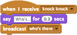

Falar com os outros
Quer criar uma conversa ou fazer um ator contar uma piada?

E este em outro ator:

Coloque dois atores para dizer coisas em turnos alternados.
Experimente usar este código em um ator:E este em outro ator:

Transmita uma mensagem para dizer a outro ator quando falar. Quando ele recebe a mensagem, ele pode responder.